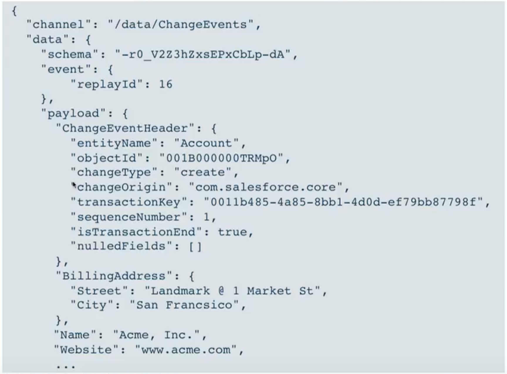
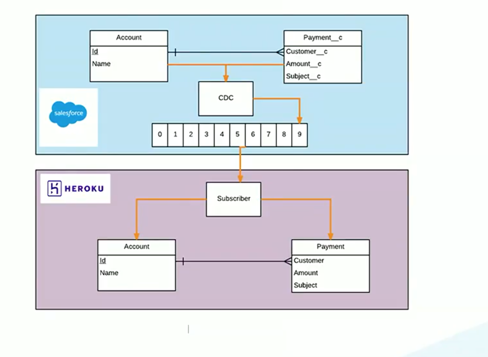

Change Data Capture
- Capture every change in the system
- Send those changes to the subscribers
- Event channel
/data/ChangeEventswill be automatically set for the customers - Event channel
/data/ENTITYChangeEventwill be set for changes for the ENTITY - Events will be delivered in order
- All sObjects will be supported over the time
- Addition event info:
date/time, tx-id, operation(create,update,delete, undelete)
Change Data Event
Event channel: /data/ChangeEvents is for ALL change events
Virtual Event channel example: /data/AccountChangeEvent is for the change events for Account object
Change Data Event - contd
schemainfo in the payload help to track the metadata changesevent.replayIdenables to perform replay of events after thatIdpayload.ChangeEventHeaderprovides additional info including: changeType, changeOrigin, ObjectId...
Architecture: Synchronize Data to Postgres With Change Data Capture
We do not need Postgres for CDC. Postgres is used as an example. It can be any system, which can subscribe to Event Channel via REST
Demo:Synchronize Data to Postgres With Change Data Capture